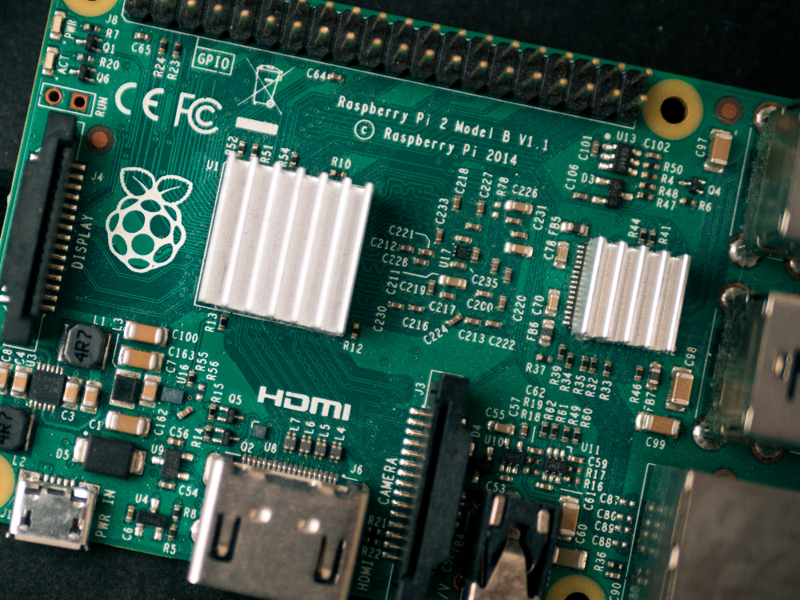

Raspberry Pi 2nd Generation
Raspberry Pi, sering disingkat dengan nama Raspi, adalah komputer papan tunggal (single-board computer atau SBC). Dengan hanya berukuran kartu kredit, Raspberry pi dapat digunakan untuk menjalankan program perkantoran, permainan komputer, dan sebagai pemutar media hingga video beresolusi tinggi.